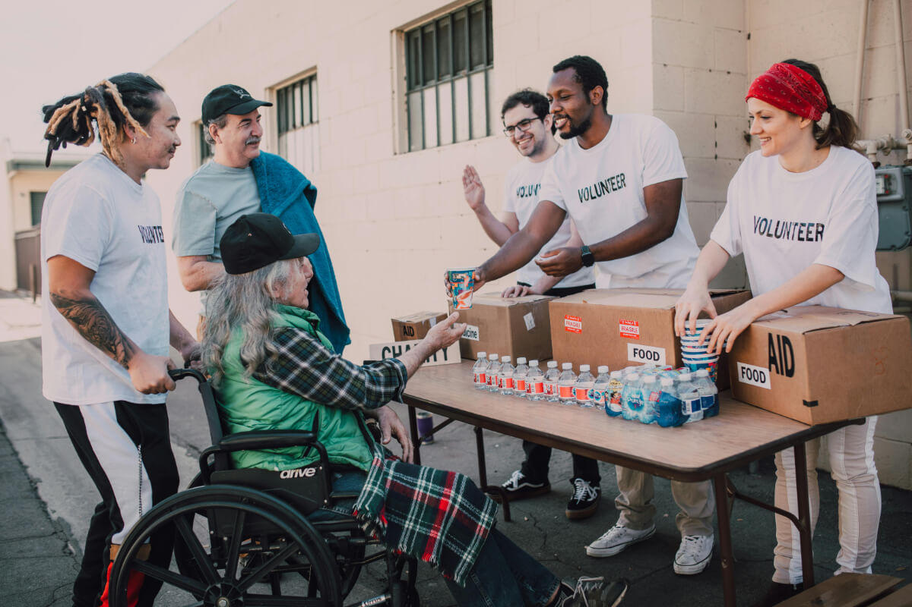

Missão
Atuar de forma emergencial e contínua no combate à insegurança alimentar e hídrica em Minas Gerais.
Nossa missão é garantir o acesso à alimentação básica e água potável para comunidades em situação de vulnerabilidade. Acreditamos que a dignidade começa com o prato cheio.
Atuar de forma emergencial e contínua no combate à insegurança alimentar e hídrica em Minas Gerais.
Ser uma ponte de solidariedade eficiente e transparente entre doadores e quem mais precisa de ajuda.
Transparência, empatia, agilidade e responsabilidade social.